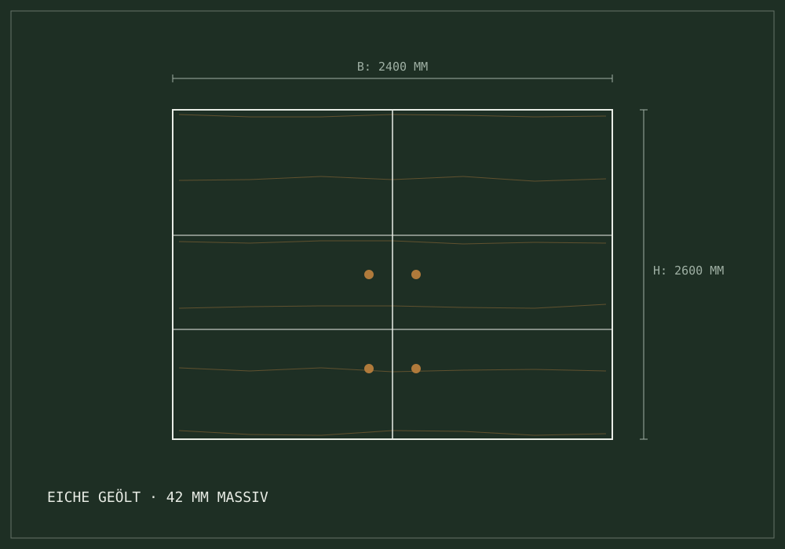

Werkstatt-Bereich 02 // Möbelbau & Innenausbau
Möbelbau &
Innenausbau
nach Mass.
Ausgewählte Massivhölzer, raumhohe Einbauschränke, fugenlose Nischenlösungen und handwerklich perfekte Oberflächen — für Räume, die kein Standardmöbel verdient.

Leistungskatalog 02 // Detailprogramm
Vier Säulen des individuellen Möbel- & Innenausbaus
Einbauschränke & Garderoben
Raumhohe, millimetergenaue Schrankanlagen, die Nischen, Dachschrägen oder schwierige Grundrisse vollständig ausnutzen.
- Fugenloses Wandanschluss-System
- Dämpfungs- & Selbsteinzugsbeschläge höchster Güte
- Garderobenbänke mit integrierten Schuhbelüftungen
Richtmass Höhe bis 3100 mm // Freie Einteilung
Massivholztische & Unikate
Esstische, Besprechungstische und Solitärmöbel aus erstklassigen Hölzern. Verzugsfrei verleimt, mit eingelassenen Gratleisten.
- Massivholzplatten bis 4500 mm Länge
- Untergestelle aus Holz oder pulverbeschichtetem Rohstahl
- Eingelassene Gratleisten zur natürlichen Formstabilität
Holzarten: Eiche · Nussbaum · Esche · Arve · Kirschbaum
Sideboards & Medienmöbel
Schwebende oder stehende Kastenmöbel mit verdeckten Kabelführungen und schalltransparenten Holzlamellen.
- Hinterlüftete Gerätenischen gegen Wärmestau
- Gehrungsecken auf 45° mit verdeckter Verstärkung
- Infrarot-durchlässige Holzrasterblenden
Technik: Schweizer Systembeschläge // Kabelmanagement
Kompletter Innenausbau
Ganzheitliche architektonische Holzkonzepte: Akustikpaneele mit Echtholzlamellen, flächenbündige Wandverkleidungen, Treppen.
- Optimierte Raumakustik durch gezielte Schlitzung
- Flächenbündige Übergänge zu Mauerwerk und Boden
- Treppentrittstufen aus astfreier Eiche
Gewerke: Akustik · Wandsysteme · Treppen · Raumteiler
Detailstudie // Verbindungstechnik
Das Handwerk im Detail
Die Beständigkeit eines Möbels entscheidet sich an den Holzverbindungen. In unserer Werkstatt pflegen wir die klassischen Techniken — sichtbar, wo sie hingehören, unsichtbar, wo sie stören.
Schwalbenschwanz & Zinkung
Sichtbare Eckverbindungen bei Schubladenkorpussen und Massivholzboxen. Handwerklich gesägt und gestemmt.
Zinkung: offen oder halbverdeckt
Gehrungen & durchlaufende Maserung
Auf Gehrung gefügte Korpuskanten, bei denen das Holzbild nahtlos von der Deckplatte auf die Seitenwand übergeht.
Maserungsabgleich: bildgeführt
Pflanzliche Öle & natürliche Wachse
Wir veredeln Massivhölzer vorzugsweise mit kaltgepresstem Leinöl und Bienenwachs. Das Holz bleibt diffusionsoffen.
0% Lösemittel · lebensmittelecht
Werkstattgarantie // Inhabergeführt
Persönliche Begleitung durch Fritz Gfeller Burgunder
Vom ersten Messpunkt vor Ort bis zur finalen Schraube: Als Inhaber stehe ich persönlich hinter jeder Konstruktion — Sie sprechen direkt mit dem Meister, nicht mit einem Callcenter.
FG · Fritz Gfeller Burgunder / Schreinermeister & Inhaber
Aufmass & Beratung
Wir vermessen den Raum bei Ihnen vor Ort mit Laser- und Winkelmessern und prüfen die Wandbeschaffenheit.
Werkzeichnung & Holz
Erstellung des CAD-Planes mit Massangaben. Gemeinsame Festlegung der Holzsortierung und Oberflächen.
Fabrikation Werkstatt
Zuschnitt, Hobeln, Verleimen und Schleifen in Niederscherli. Passgenaue Vormontage im Atelier zur Funktionsprüfung.
Montage & Übergabe
Saubere Einpassung vor Ort durch unsere Fachschreiner. Justierung aller Fugen und persönliche Übergabe.
Digitaler Vorkonfigurator // Möbelbau-Assistent · Status: Bereit
Planen Sie Ihr Massmöbel
in wenigen Schritten vor.
Geben Sie Grobmasse, Raumsituation und bevorzugtes Holz an. Unser digitaler Werkstatt-Assistent strukturiert Ihre Anfrage — die verbindliche Offerte folgt nach dem Aufmass vor Ort.
Kategorie
Holzart
Vorkonfiguration · Möbelbau
Unverbindlich · Kostenloses Erstgespräch vor Ort · Lieber direkt sprechen? +41 79 230 97 68
Anfrage in 60 Sekunden
Planen Sie ein Projekt nach Mass?
Ob Einbauschrank, Esstisch oder kompletter Innenausbau: Fritz Gfeller Burgunder berät Sie unverbindlich.